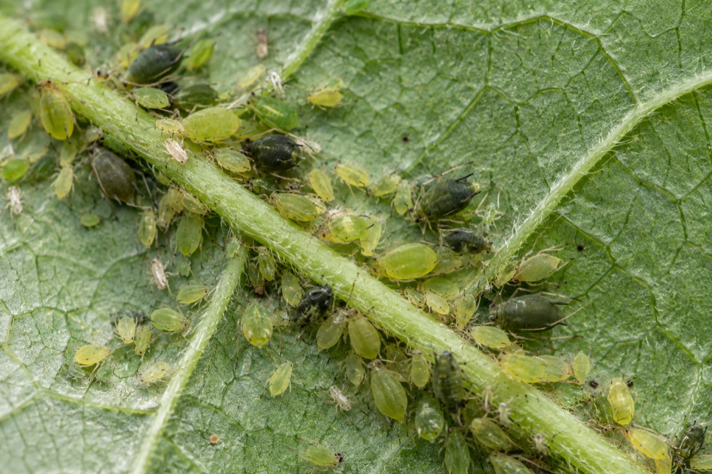
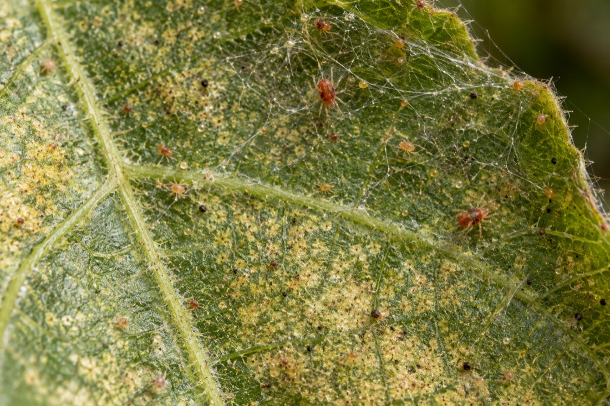
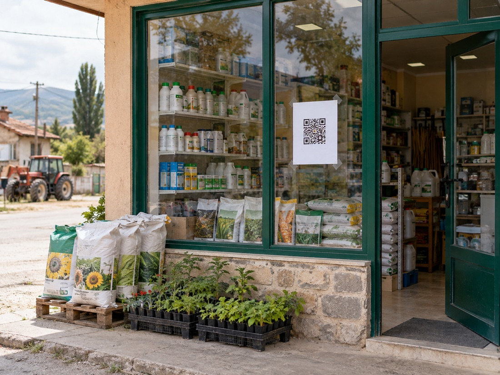

● Yüksek risk · GAP
Beyaz sinek
Bemisia tabaci
Yaprak altında koloni kurar, bal özsuyu bırakır. Haziran sonundan itibaren hızla artar.
Bu hafta0
4 haftada0
Çiftçiler için tarla ve üretim takip programı
Tarlalarını ekle, yaptığın işlemleri kaydet; ürüne göre dekara ve tarla toplam maliyetini tek ekranda takip et.
ÇİFTÇİ ALANIM
Ürün kartına dokun, o üründeki tarlalarını ve maliyetlerini gör.
Çiftçi tarafı · sezon simülatörü
Nisan'daki sürümden Eylül'deki hasada kadar her işlem kilo maliyetine eklenir. Zaman çizgisini kaydırın ya da oynatın: bitki büyür, zararlı gelir, ilaçlama yapılır, maliyet canlı hesaplanır.
Yapay zekâ notu
Sahadan gelen sinyal
Çiftçi ilaçlama kaydederken zararlıyı da seçer. Böylece her ilaçlama aynı zamanda bir saha gözlemi olur: hangi zararlı, hangi bölgede, hangi hafta ve kaç tarlada.
Bemisia tabaci
Yaprak altında koloni kurar, bal özsuyu bırakır. Haziran sonundan itibaren hızla artar.

Helicoverpa armigera
Tarak, çiçek ve kozayı deler. Temmuz ortası ikinci döl dönemi kritik.

Aphis gossypii
Genç sürgün ve yaprak altında toplanır, virüs taşır. Serin ve nemli haftalarda artar.

Tetranychus urticae
Sıcak ve kuru dönemde yaprak altında ağ örer, yaprakta bronzlaşma yapar.
Çiftçiye ulaşım
Kayıt çiftçi için ücretsiz ve bir dakikalık. Ulaşım, çiftçinin zaten uğradığı yerlerden kurulur.

Kısa bir metin ve tek bağlantı. Merak eden çiftçi tıklar, kendi tarlasının kilo maliyetini görmek için kaydolur.

Zirai ilaç ve tohum bayilerinin camına A4 afiş. Çiftçi QR'ı okutur, kaydı bayide tamamlar; bayi de bölgesinin özet raporunu alır.

Tarım fuarlarında ve firma saha günlerinde yerinde kayıt masası: çiftçi kaydolurken ilk kilo maliyetini ekranda görür.
KVKK VE GÜVEN
Profil, tarla ve üretim kayıtlarını kendi hesabında yönetirsin. Kişisel maliyet özetini görmek için telefon numaranla giriş yap.
Tarla ve işlem kayıtların, giriş yaptığın kişisel alanda gösterilir.
Eklediğin tarla ve üretim bilgilerini kendi ekranlarından görüntüleyip güncelleyebilirsin.
Hesaplama için kullanılan miktar, ambalaj büyüklüğü ve paket fiyatı açıkça gösterilir.
ÇİFTÇİ ALANIM
ÜCRETSİZ ÇİFTÇİ ÜYELİĞİ
Kendi şifreni belirle, profilini oluştur ve tarlalarını ekleyerek üretim kayıtlarını tut.
Üyelik oluştur / giriş yap →Girişte telefon numaranı kullanıcı adı olarak kullan. Kayıt sırasında SMS onayı yoktur.